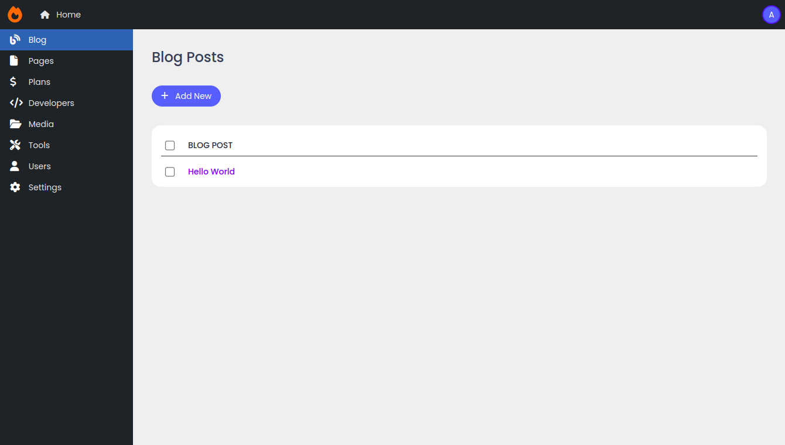

Django Admin Plus
Django admin plus helps you to create beautiful admin interface quickly in minimal steps.

Installation
pip install dj-admin-plus
Update your settings file
Add DJ Admin plus in your installed apps.
INSTALLED_APPS = [
...
'dj_admin_plus', # Add DJ Admin plus
]
Configure urls
Add new admin interface to the urls.py file.
from django.conf import settings
from django.conf.urls.static import static
from django.contrib import admin
from django.urls import path, include
urlpatterns = [
path('admin/', include('dj_admin_plus.urls')), # Add DJ Admin plus
path('classic/', admin.site.urls), # Old admin interface still works
]
urlpatterns += static(settings.MEDIA_URL, document_root=settings.MEDIA_ROOT)
Register navigation
You need to register your navigation according to your need either in models.py or views.py in one of the installed apps.
For example, update your models.py.
from django.contrib.auth import get_user_model
from dj_admin_plus import navigation
from dj_admin_plus.navigation import Navigation
from test_app.models import Blog, Category
navigation.register([
Navigation(
_id='dashboard',
title='Dashboard',
icon_class='fa-gauge-high',
url='/dashboard/'
),
Navigation(
_id='blog',
title='Blog',
icon_class='fa-file',
model=Blog,
children=[
Navigation(_id='all_posts', title='All Posts', model=Blog),
Navigation(_id='categories', title='Categories', model=Category)
]
),
Navigation(_id='users', title='Users', icon_class='fa-user', model=get_user_model()),
Navigation(_id='settings', title='Settings', icon_class='fa-gear')
])
For sidebar icons, DJ Admin plus uses free font awesome solid icons.
Configure default navigation page
You need to choose the default page when http://127.0.0.1:8000 is visited. It is because DJ Admin plus don't know which page to show first until you specify.
There are two ways to set up default page in DJ Admin plus.
Option 1: Set first navigation as a default page
You need to pass extra argument select_fallback_first=True.
from dj_admin_plus import navigation
navigation.register([...], select_fallback_first=True)
In this method, when you access the admin page, it will redirect to the first navigation item you specified in register method.
Option2: Using Django view
The above method may be unsuitable for you when you want to display a navigation like dashboard when the admin page is accessed.
It is because the above method adds the additional path which makes the url like http://127.0.0.1:8001/admin/dashboard/ instead.
Create a new view
Here is a minimal example.
Create a new dashboard.html for dashboard view.
{% extends "dj_admin_plus/base.html" %}
{% block content %}
{% include 'dj_admin_plus/title.html' with title='Dashboard' %}
<p>Your custom code</p>
{% endblock %}
In your views views.py file:
from django.shortcuts import render
def dashboard_view(request):
return render(request, 'dashboard.html')
Update your previous navigation register to:
from dj_admin_plus import navigation
from dj_admin_plus.navigation import Navigation
from test_app.views import dashboard_view
navigation.register([
Navigation(
_id='dashboard',
title='Dashboard',
icon_class='fa-gauge-high',
view=dashboard_view # Change to view instead
),
...
])